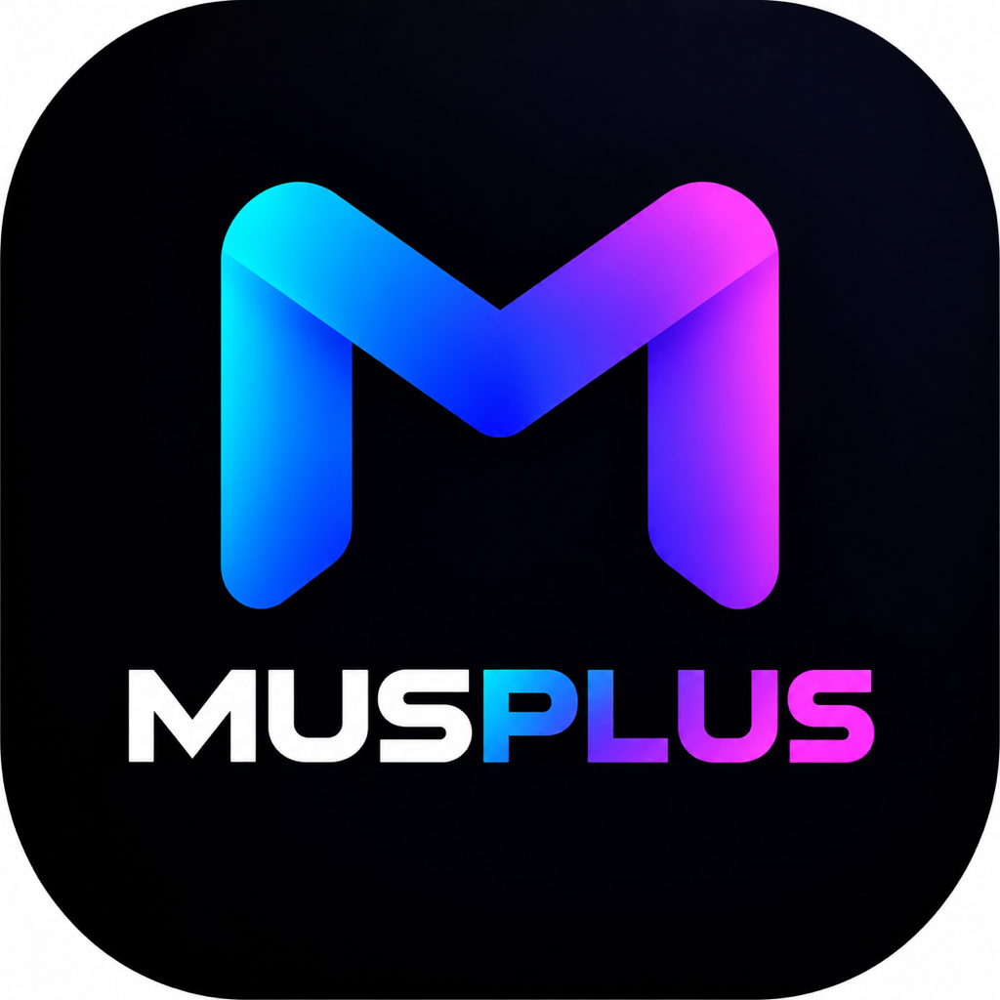

MUSPLUS Support
Your own offline music player — import your files, play them anywhere, no account, no cloud.
Need help or have a question?
Email us directly at support@pticar.si and we'll get back to you as soon as we can.
Frequently asked questions
What audio formats can I import?
MUSPLUS imports .m4a files from the Files app. Tap the + button in the bottom bar to bring songs in — they're copied into the app so they're always available, even offline.
Does MUSPLUS need an internet connection?
No. Once your music is imported, everything — playback, search, playlists, the equalizer — works completely offline.
How do I move my library to another iPhone or iPad?
Open Settings → Sync Music on both devices while they're on the same Wi-Fi network. One device hosts and shows a PIN, the other joins with it, and your songs transfer directly between the two devices — never through a server.
Can I customize the sound?
Yes. Settings → Equalizer offers built-in presets or a fully custom curve, plus an adjustable crossfade between tracks.
Is my data ever sent anywhere?
No. MUSPLUS has no analytics, no ads, and no tracking. See the
Privacy Policy for full details.